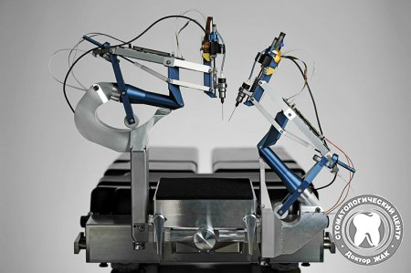
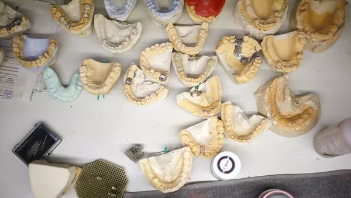

Ведущим специалистам Израиля удалось создать робота-стоматолога, который профессионально выполняет свои функции.
Так, например, он легко и непринужденно сверлит отверстия в зубах, причем в несколько раз точнее и тщательнее, чем
стоматолог-человек.
Чтобы подтвердить профессиональную состоятельность искусственного дантиста, ученые провели соответствующие испытания и
подтвердили возможность использования машины на практике.

Робот впервые успешно имплантировал два новых зуба человеку. Устройство справилось с задачей без участия человека.
Устройство вставило зубы со стандартной для подобных операций погрешностью в 0,2—0,3 мм. При этом машина корректировала
свою работу, когда пациентка двигалась. Отмечается, что вставные зубы были напечатаны на 3D-принтере.